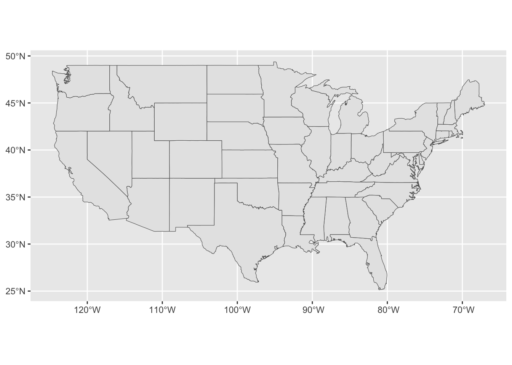
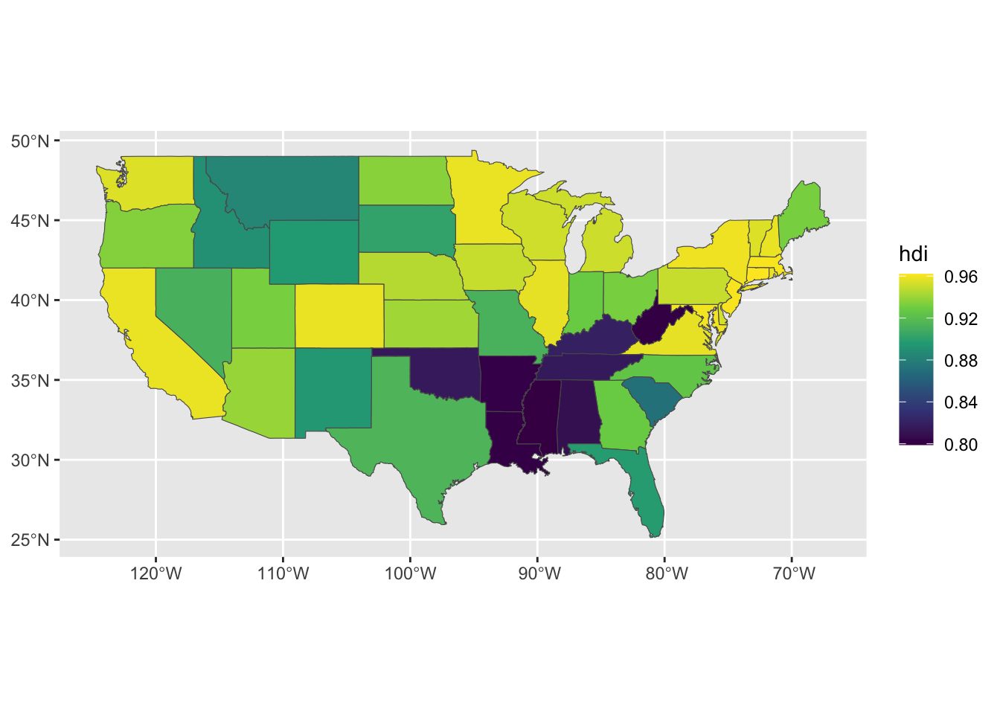
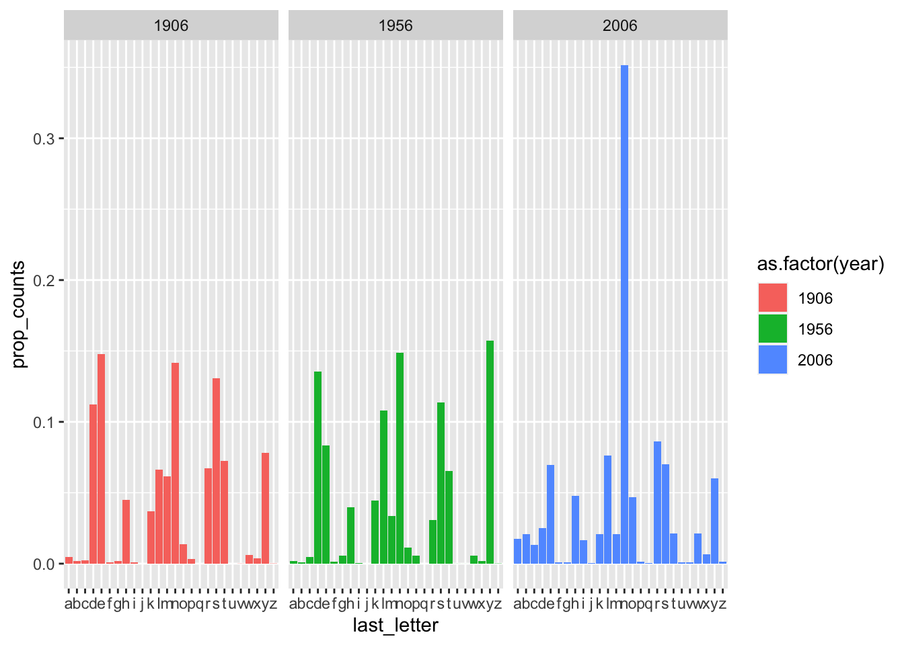
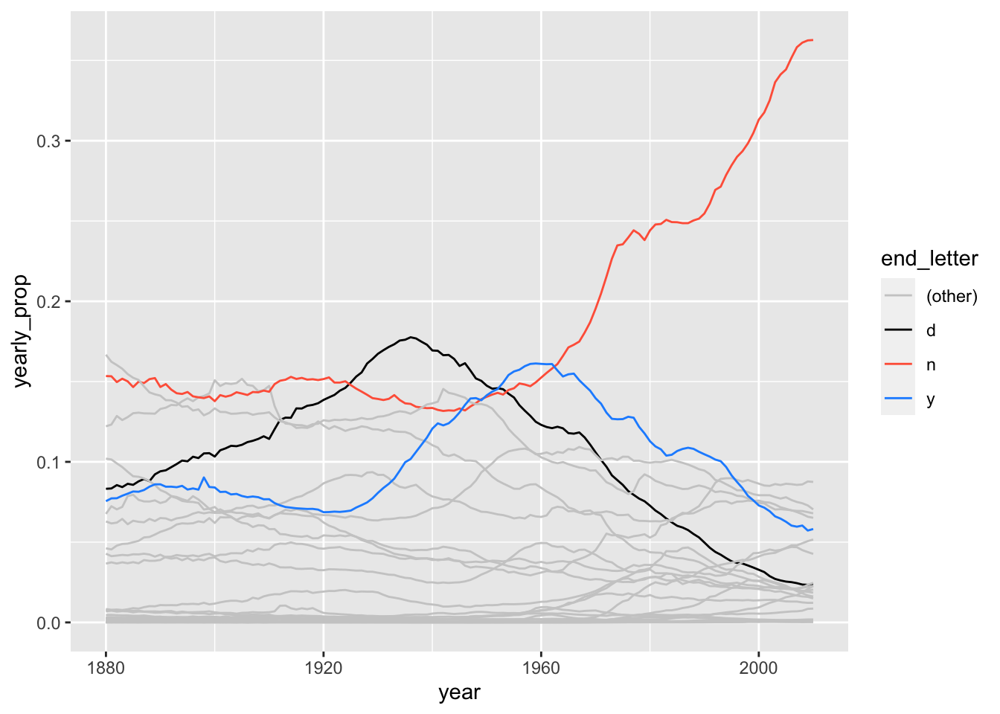

library(foreign)
library(dplyr)
library(tidyr)
library(ggplot2)
library(stringr)
library(broom)
library(maps)
library(sf)
library(rosdata)2 Data and measurement
2.1 Summary
Before fitting a model, you need to understand the data and the measurements, the numbers and where they come from. This chapter demonstrates through examples how to use graphical tools to explore understand and measurements.
The first example (graphing Human Development Index) shows that you understand data better when you plot them in different ways. The second example (Political Ideology and party identification) show that details of measurement can be important and that gaps between measurement and reality can be large.
Keep in mind that the issue of measurement is important because of two reasons:
- We need to understand what the data actually mean.
- Learning about accuracy, reliability and validity will set the foundation for understanding variance, correlation, and error (all part of linear models).
Features of data quality:
A measure is valid to the degree that it represents what you are trying to measure. Validity of a measuring process is defined as a property of giving the right answer across a wide range of plausible scenarios.
A measure is reliable to the degree that it gives the same answer when applied to the same situation. A reliable measure is one that is precise and stable.
Selection is the third feature of data quality, the idea that the data you see can be a non-representative sample of a larger population that you will not see.
Several visualization suggestions are given in this chapter.
Three uses of graphics in statistical analysis are given:
- Displays of raw data (part of explorative analysis), just to understand data;
- Graphs of fitted models and inferences (to understand model fits);
- Graphs as communication tools (to communicate results).
2.2 Presentation
On 12-12-2023 Sam Langton gave this presentation on chapter 2 of Regression and Other Stories for the *Reading Club Session (chapter 2). His script you can also find here.
First load packages for this chapter.
General discussion points he put on the agenda:
- New GitHub repo intro.
- Difference between visualisation issues and then scrutiny over a composite measure (section 2.1).
- Validity and reliability: any examples from people’s work?
- What did people think of the plots? I had some queries (e.g., 2.5, 2.7).
- Grammar of Graphics-style approach (but without ggplot2 code).
- Plotting regression results.
2.2.1 Map visual
Load in HDI data.
# take care of the path to the data
hdi_df <- read.table("~/Desktop/WERK/Gelman/reading_club_GIT/Reading_club_Git/ROS-Examples-master/HDI/data/hdi.dat", header = TRUE)Get state boundaries using the maps-package.
states_sf <- maps::map("state",
plot = FALSE,
fill = TRUE) %>%
st_as_sf()Plot this.
ggplot(data = states_sf) +
geom_sf()
Join the HDI data to the spatial polygons.
state_hdi_sf <- hdi_df |>
mutate(ID = str_to_lower(state)) |>
right_join(states_sf) |>
st_as_sf()Map out HDI using a continuous scale.
ggplot(data = state_hdi_sf) +
geom_sf(mapping = aes(fill = hdi)) +
scale_fill_viridis_c()
2.2.2 Scatterplots
Load in the income/hdi data.
# take care of the path to the data
income_df <- read.dta("~/Desktop/WERK/Gelman/reading_club_GIT/Reading_club_Git/ROS-Examples-master/HDI/data/state vote and income, 68-00.dta")Create a common id again.
income_df <- income_df %>%
mutate(st_state = str_to_lower(st_state))Scatterplots.
# Remark: why not a scatterplot?
income_hdi_df <-income_df %>%
filter(st_year == 2000) %>%
ggplot() +
geom_text(mapping = aes(x = st_income, y = hdi, label = st_stateabb))
geom_point(mapping = aes(x = st_income, y = hdi))mapping: x = ~st_income, y = ~hdi
geom_point: na.rm = FALSE
stat_identity: na.rm = FALSE
position_identity 2.2.3 Names plots
# take care of the path to the data
names_df <- read.csv("~/Desktop/WERK/Gelman/ROS-book/ROS-book/ROS-Examples-master/Names/data/allnames_clean.csv") %>%
as_tibble()Make it long and filter.
names_long_df <- names_df |>
pivot_longer(cols = c(-X, -name, -sex), names_to = "year", values_to = "number",
names_prefix = "X") |>
mutate(year = as.numeric(year),
last_letter = str_sub(name, start = -1)) Now Figure 2.7.
names_long_df %>%
filter(year == 1906 | year == 1956 | year == 2006,
sex == "M") %>%
group_by(year, last_letter) %>%
summarise(counts = sum(number)) %>%
ungroup() %>%
group_by(year) %>%
mutate(total_counts = sum(counts),
prop_counts = counts/total_counts) %>%
ungroup() %>%
ggplot(data = .) +
geom_col(mapping = aes(x = last_letter, y = prop_counts,
fill = as.factor(year)),
position = "dodge") +
facet_wrap(~year)`summarise()` has grouped output by 'year'. You can override using the
`.groups` argument.
Make a line graph.
names_long_df %>%
filter(sex == "M") %>%
group_by(year, last_letter) %>%
summarize(yearly_counts = sum(number)) %>%
ungroup() %>%
group_by(year) %>%
mutate(year_total = sum(yearly_counts),
yearly_prop = yearly_counts/year_total,
end_letter = if_else(last_letter == "d" |
last_letter == "y" |
last_letter == "n",
last_letter,
"(other)")) %>%
ungroup() %>%
ggplot(data = .) +
geom_line(mapping = aes(x = year, y = yearly_prop, group = last_letter,
colour = end_letter)) +
scale_colour_manual(values = c("grey80", "black", "tomato", "dodgerblue")) `summarise()` has grouped output by 'year'. You can override using the
`.groups` argument.